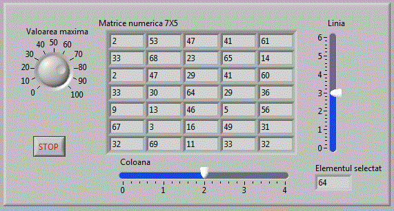
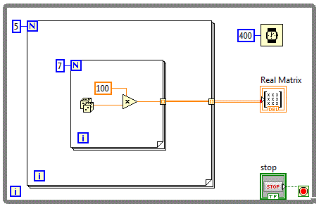
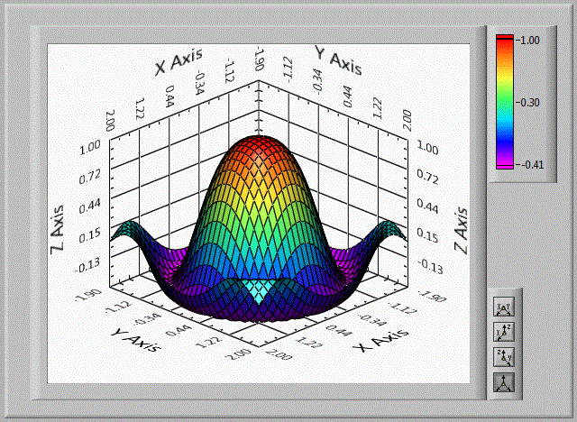
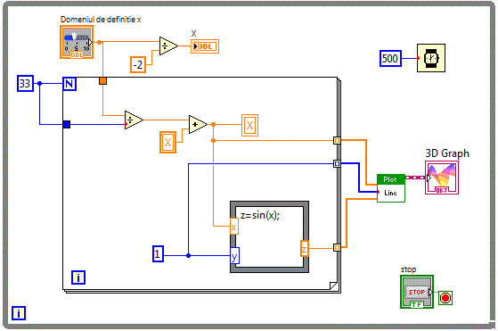

Tablouri de elemente
La fel ca in celelalte medii de programare, tablourile sunt extrem de utile si in consecinta sunt des utilizate.
LabVIEW ofera o metoda rapida pentru crearea si initializarea tablourilor.
Crearea si initializarea tablourilor de elemente
Vom crea si vom initializa pentru inceput un vector cu 8 elemente binare.
Vom crea un VI vector_v0 pe care vom plasa un control de tip Array. Controlul de tip Array
se gaseste in : Controls-->Modern-->Array, Matris & Cluster-->Array. Tinand cont ca vrem sa initializam un vector cu elemente binare, vom plasa pe
panoul frontal un control boolean de tip LED. In acest moment panoul frontal arata astfel:
Vom selecta ledul si il vom "trage" cu mouse-ul peste controlul array creat anterior. In acest moment panoul frontal
arata astfel:
Redimensionam vectorul creat pana apar 8 LED-uri si schimbam proprietatea Label cu "Vector LED-uri". In acest moment panoul frontal
arata astfel:
In acest moment, alegand din Tools->Operate Value, putem sa schimbam starea ledurilor si sa atribuim dupa dorinta
diverse valori (0 sau 1) LED-urilor. Avem in acest moment:
Am creat si am initializat astfel un vector cu 8 elemente de tip boolean.
Selectarea unui element dintr-un tablou
Odata creat si initializat un tablou de elemente, elementele acestuia pot fi selectate pentru a citi valoarea elementului respectiv.
Sa presupunem ca am creat un vector de elemente, pe care le-am initializat. Urmatoarea aplicatie citeste elementul dorit din vector.
Vom crea deci un VI vector_v1 de forma:
avem nevoie de o functie care sa selecteze un anumit eklement de la un anumit index. Functia se numeste Index Array
si se gaseste in grupul Functions-->Programming-->Array-->Index Array. Diagrama bloc arata astfel:
Se observa ca Index Array are nevoie de tabloul si indexul in cadrul tabloului si furnizeaza valoarea elementului.
Setarea valorilor elementelor unui tablou poate fi facuta si prin atribuirea directa de valori pentru fiecare element.
In urmatoarea aplicatie vector_v2 se vor genera numere aleatoare
intre 0 si 256 , fiecare numar va fi convertit in 8 biti care vor fi atribuiti unui vector boolean cu dimensiunea 8. Numerele vor fi generate la
un interval de 100 ms deci afisand continutul vectorului vom obtine aprinderea aleatoare a bitilor ce compun vectorul.
Diagrama logica va contine un convertor Number to Boolean Array
Valoarea numerica aleatoare intre 0 si 256 va fi convertita intr-un vector boolean pe 8 biti care este atribuit
vectorului cu LED-uri care va fi afisat pe panoul frontal.
Vectori de elemente
Am creat in aplicatiile anterioare tablouri unidimensionale de elemente. Tablourile unidimensionale mai poarta
denumirea de vectori. In aplicatiile anterioare am creat si am initializat vectori booleeni. Vectorii pot contine orice fel de elemente. Dupa
principiul dupa care am creat bectorii booleeni, vom crea acum vectori care vor contine elemente de tip numeric.
Nom crea acum o aplicatie vector_v3 unde vom plasa
un control de tip vector cu 10 elemente numerice double. Acest control va permite modificarea fiecarui element din vector precum si selectarea si
afisarea separata a unui element selectat prin intermediul unui control numeric ce reprezinta indexul in vector.
Diagrama bloc a aplicatiei foloseste functia "Index Array" pentru a selecta elementul dorit.
Elementele vectorului pot fi inscrise si prin alte metode, cum ar fi atribuirea cate unui numar fiecarui element.
Urmatoaerea aplicatie vector_v4 atribuie cate un
numar aleator fiecarui element al vectorului.
Atribuirea cate unui numar aleator fiecarui element al vectorului este o procedura repetitiva. Vom folosi deci structura
de programare repetitiva For Loop.
Se observa ca iesirea din structura de programare repetitiva For Loop are " dimensiunea tablou de elemente" fiind
reprezentata cu o linie mai groasa.
Matrici de elemente
Bazandu-ne pe aplicatiile cu vectori booleani, vom realiza acum o matrice booleana. Urmatoarea
aplicatie matrici_v0 utilizeaza o matrice booleana de 16X16.
Diagrama bloc va fi asemanatoare cu diagrama aplicatiei > vector_v2 cu diferenta ca va trebui reluata
pentru mai multe linii.

Diagrama bloc contine deci o structura repetitiva for care repeta de 16 ori inscrierea a cate 16 biti
Sa imbunatatim aplicatia anterioara si sa adaugam un buton care sa initializeze cu o matricea cu alte cuvinte sa
stinga toate LED-urile. Obtinem astfel aplicatia: matrici_v1
Vom plasa un buton caruia i se seteaza operatia "Switch until Released". Dupa apasare matricea de LED-uri se va sterge
si va ramane stearsa pentru 500 ms. Pentru a se realiza aceasta functionalitate se va folosi o structura decizionala "Case Structure".
Pe perioada cand nu este actionat butonul, aplicatia trebuie sa execute diagrama bloc din aplicatia anterioara, adica:
Pe perioada cand este actionat butonul, aplicatia trebuie initializeze matricea cu 0 si sa astepte 500 ms
Matrici de LED-uri
Sa utilizam acum o matrice de LED-uri de dimensiune 7X5, matrice care se produce de diverse firme
de componente electronice. Sa incercam sa formam din LED-uri aprinse cifrele de la 1 la 9
matrici_v2 .
Va trebui sa definim 10 matrici binare in care vom seta elementele care corespund LED-urilor aprinse in cadrul unei cifre.
Vom folosi o structura decizionala "Case Structure" cu 10 optiuni si vom plasa in cadrul fiecarei optiuni matricea corespunzatoare. Astfel de exemplu
pe optiunea 3 punem:
Selectarea elementelor apartinand unei matrici
Avand o matrice de diverse elemente, se pune problema cum accesam aceste elemente. La fel cum am selectat un element
apartinand unui vector, putem accesa un element, o linie sau o coloana apartinand unei matrici. Functia care ne permite aceasta operatie este aceeasi
functie utilizata pentru vectori si anume: Index Array plasata in grupul Functions-->Programming-->Array-->Index Array.
Sa realizam o aplicatie matrici_v3 in care avanad o matrice
de elemente binare vom selecta o anumita linie si o vom afisa utilizand un control sub forma de vector de LED-uri.
Diagrama bloc va contine functia Index Array
Dupa cum se observa, functiei Index Array i s-a furnizat un singur parametru respectiv numarul liniei.
dupa acelasi principiu, sa realizam o aplicatie matrici_v4
in care avanad o matrice de elemente binare vom selecta o anumita coloana si o vom afisa utilizand un control sub forma de vector de LED-uri.
In diagrama bloc,vom furniza functiei Index Array, un singur parametru si anume numarul coloanei.
Am putea selecta o coloana furnizand functiei Index Array in loc de parametrul numarul coloanei, numarul liniei
matrici_v5 , cu conditia sa transpunem maricea utilizand functia Transpose 1D Array,
ceva asemanator cu diagrama bloc de jos:
Combinand selectia unei linii cu selectia unei coloane, obtinem aplicatia:
matrici_v6
Diagrama bloc fiind:
Pentru selectia unui singur element matrici_v7
Vom furniza functiei Index Array simultan cei doi parametrii, respectiv numarul liniei si numarul coloanei.
Matrici numerice
Tablourile pot contine orice fel de elemente. Vom utiliza in continuare o matrice numerica in care elementele
numerice vor fi inscrise cu numere aleatoare matrici_v8 .
Pentru a inscrie toate elementele matricii 7X5 vom avea nevoie de o dubla iteratie.
Selectia elementelor se face similar folosind functia Index Array. Vom completa aplicatia anterioara cu selectia
unui anumit element matrici_v9 .

Diagrama bloc fiind:

Matrici cu numere reale
Dupa cum am amintit matricile sunt tablouri bidimensionale. Putem oricand crea matrici prin plasarea unui tablou
caruia ii setam dimensiunea la 2. Avand in vedere importanta matricilor care contin numere reale sau imaginare, s-au creat cotroale speciale pentru
matricile cu numere reale si matricile cu numere imaginare. Aceste controale sunt plasate in: Controls-->Modern-->Array, Matris & Cluster-->RealMatrix
respectiv in Controls-->Modern-->Array, Matris & Cluster-->ComplexMatrix.
Sa realizam acum o aplicatie care utilizeaza matrici reale matrici_v30 .
In cadrul acestei aplicatii se va realiza o matrice reala de dimensiune 7X5 in care or fi inscrise numere aleatoare
dupa fiecare 400 ms.
Diagrama bloc va contine o dubla cilare pentru a inscrie elementele matricii.

Matrici cu numere imaginare
Dupa o metoda similara cu metoda de sus se pot crea si utiliza matrici cu numere imaginare. Vom crea in continuare
o aplicatie matrici_v31 , in care va realiza o matrice imaginara de dimensiune 3X5 in care
vor fi inscrise numere aleatoare dupa fiecare 400 ms.
In diagrama bloc va fi utilizata functia "Re/Im To Complex" functie aflata in: Function-->Programming-->Numeric-->Complex-->Re/Im To Complex
Tablouri 3D
Se pot defini tablouri cu oricate dimensiuni. Ne vom opri totusi la tablouri cu 3 dimensiuni. Folosind matrici de
LED-uri putem defini practic aproape orice simbol (litera sau cifra). Ne propunem sa afisam caracterele de la 0-9 folosind matrici de LED-uri.
Va trebui sa definim deci 10 matrici boolene care sa contina cele 10 simboluri. Practic definim un singur tablou 3D cu dimensiunea 7X5X10. Din
tablul 3D se pot face diverse selectii cum ar fi : o matrice, o coloana, un rand, un element. Selectand o matrice, vom selecta practic simbolul
unui anumit caracter. matrici_v20
Elementele tabloului 3D trebuiesc setate corespunzator cu simbolurile cifrelor dupa care selectand o anumita matrice
folosind functia Index Array, si afisand-o intr-o matrice de leduri, se afiseaza cifra dorita.
Utilizarea tablourilor pentru afisarea grafica
Majoritatea controalelor grafice presupun utilizarea tablourilor. In general afisarea datelor in mod grafic se face
prin intermediul tablourilor, tablouri care pastreaza datele ce urmeaza a fi reprezentate grafic.
Astfel pentru afisa grafic valorile unui vector, se foloseste controlul Waveform Graph aflat in grupul :
Controls-->Modern-->Graph-->Waveform Graph matrici_v5 .
Diagrama bloc va contine deci si o legatura spre controlul grafic Waveform Graph.
Dupa cum se observa, ontrolul grafic Waveform Graph, admite la intrare un Array 1D pentru afisare Single Plot.
Functiile de tipul z=f(x,y) pot fi reprezentate grafic sub forma de suprafete. Reprezentarea suprafetelor 3D
implica utilizarea a doi vectori care pastreaza valorile pentru x respectiv y si un tablou bidimensional in care vor fi pastrate valorile
functiei f(x,y). Pentru a reprezenta acest tip de functii, exista controale grafice specilae. In aplicatia urmatoare
matrici_v40 vom folosi controlul 3D aflat in grupul: Control-->Modern-->Graph-->3D Graph-->
Surface.
pentru a reprezenta grafic functia:z=cos(x*x+y*y)*exp(-0.3*(x*x+y*y));

In diagrama bloc se va folosi o structura "Formula node" pentru a introduce expresia functiei.
Dupa cum se observa, controlul 3D Graph-->Surface are nevoie de trei tablouri pentru a afisa graficul functiei.
Pentru a modifica rezolutia cu care se afiseaza suprafata, mai adaugam un control numeric.
matrici_v41
Diagrama bloc fiind:
Pentru a modifica domeniul de definitie al functiei, adaugam un control numeric astfel:
matrici_v42
Diagrama bloc fiind:
De multe ori e necesara vizualizarea unei curbe in spatiu. Astfel am putea reprezenta grafic traseul uniui avion care
se deplaseaza in trei coordonate. Pentru inceput vom reprezenta functia sin(x) iar y va fi o constanta (in cazul nostru y=1)
matrici_v43
Pentru afisare vom folosi controlul 3D Graph plasat in grulpul: Controls-->Modern-->Graph-->3D Graph-->Line Graph
Diagrama bloc fiind:

Vom folosi acelasi control dar vom afisa de data aceasta functia reprezentata anterior sub forma de suprafata
z=cos(x*x+y*y)*exp(-0.3*(x*x+y*y)) dar de data aceasta sub forma de linie 3D
matrici_v43
Diagrama bloc fiind:
Vom folosi in continuare controale grafice si vom afisa functia de potential a lui Lenard Johanson
V=4*eps*((pow(sig/r,12))-(pow(sig/r,6))) matrici_v50 ;
Diagrama bloc fiind:
Am putea reprezenta in spatiu potentialul in jurul unei moecule folosind un control grafic 3D ,
plecand de la functia de potential Lenard Johanson realizand o functie de doua variabile x si y egale intre ele
z=4*eps*((pow(sig/sqrt(x*x+y*y),4))-(pow(sig/sqrt(x*x+y*y),2)));
matrici_v51 .

Diagrama bloc fiind:
Tematica de laborator-Tablouri de elemente
Utilizarea matricilor de LED-uri
Sub-Vi comanda coloana matrice de leduri Matr_col ;
led_matr_v0 ;
led_matr_v1 ;
led_matr_v2 ;
led_matr_v3 ;
Sub-Vi comanda linie matrice de leduri Matr_lin ;
l_matr_v0 ;
l_matr_v1 ;
l_matr_v2 ;
l_matr_v3 ;